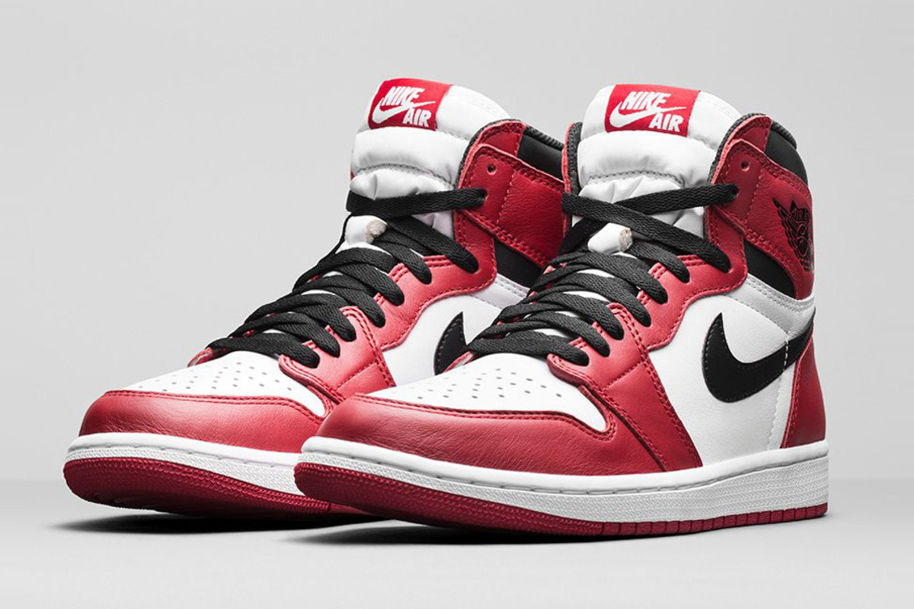
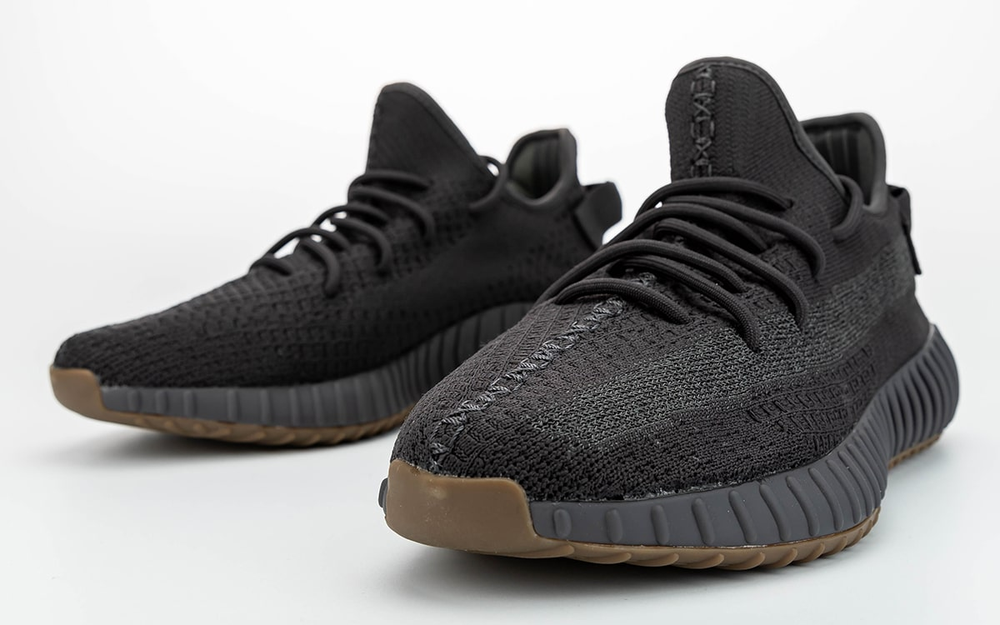
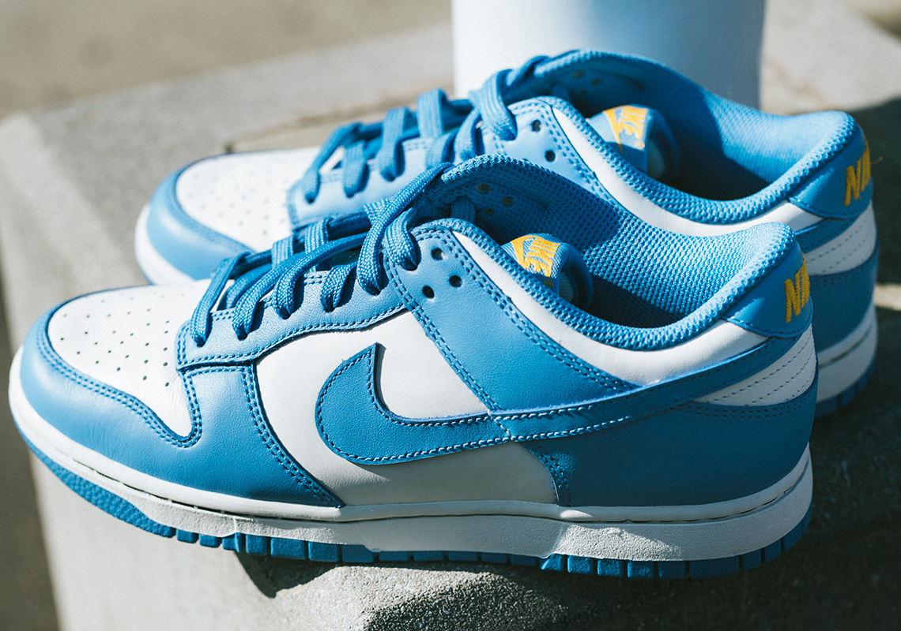
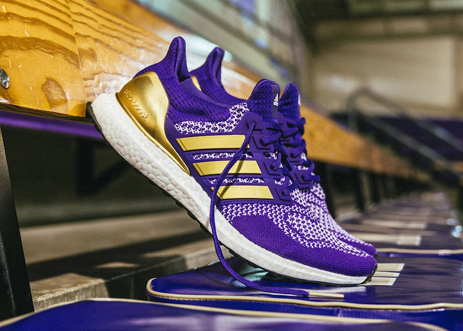
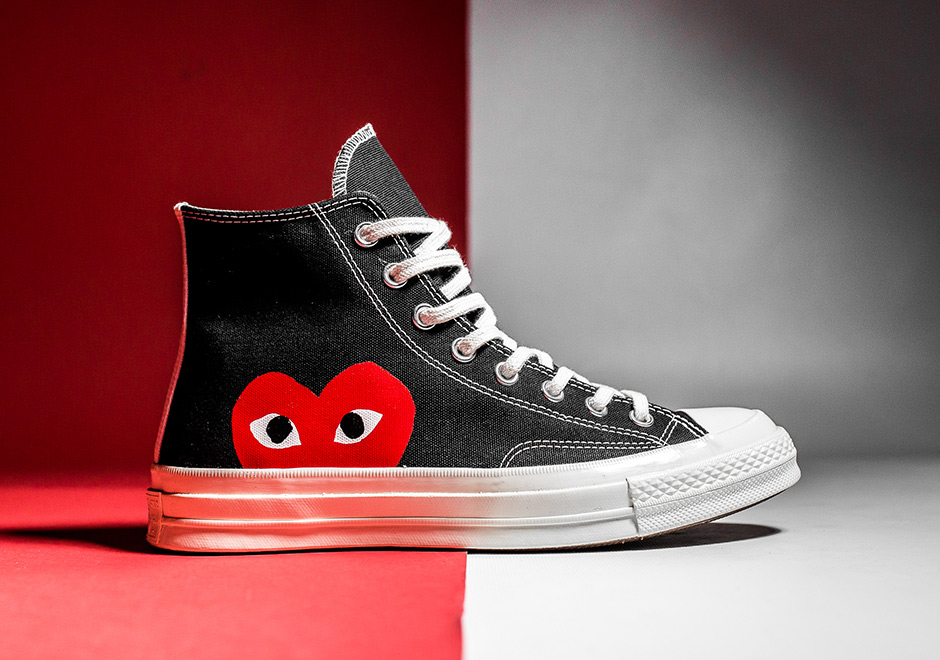

Choose a sneaker you want to purchase.
| Sneaker | Brand | Image | Price | Date Listed | Description |
| Air Jordan 1 Retro High OG 'Chicago' 2015 JRDN-CHICAGO |
Jordan/Nike |  | $700 | 01/26/2021 | The Air Jordan 1 Retro High OG 'Chicago' 2015 colorway was designed to avoid Jordan's $5,000-per game fines from the NBA after the original black and red colorway was banned. The 'Chicago' was first retroed in 1994 and stayed true to the 1985 design. Further retros were released in 2013 with small changes to the design, and again in 2015 with the original branding details: the Nike Air logo on the tongue and the original clean heel without the Jumpman logo. |
| Yeezy Boost 350 V2 'Cinder Non-Reflective' YZY-CINDER |
Yeezy/Adidas |  | $375 | 11/15/2020 | The Yeezy Boost 350 V2 ‘Cinder Non-Reflective’ delivers a muted colorway of Kanye West’s popular lifestyle silhouette. A charcoal grey hue is applied throughout the Primeknit upper, accented with the standard post-dyed monofilament stripe on the sneaker’s lateral side. The same dark grey coloring is used on the rubber cage that encapsulates the Boost midsole, while the outsole is rendered in grippy gum rubber. Underfoot, an unexpected pop of bright yellow distinguishes the heel pod. |
| Wmns Dunk Low 'Coast' NIKE-DUNK |
Nike |  | $370 | 02/18/2021 | The Nike women’s Dunk Low ‘Coast’ highlights traditional two-tone color blocking on a leather upper that maintains the look of the original 1985 release. A crisp white base, replete with perforated detailing on the toe box, is contrasted by overlays in a vibrant blue finish. Nike branding on the heel tab and woven tongue tag are rendered in an unexpected pop of yellow. The sneaker rides on a low-profile midsole, supported by a rubber outsole featuring concentric circle tread. | UltraBoost 1.0 'NCAA Pack - Washington' ADIDS-ULTRABOOST |
Adidas |  | $110 | 09/09/2020 | Releasing as one of the eight colorways that comprise the ‘NCAA Pack,’ the adidas UltraBoost 1.0 ‘Washington’ features a collegiate color scheme celebrating the Huskies. The purple Primeknit upper is accented with metallic gold three-stripes and interchangeable tongue patches offering a choice of adidas or Washington branding. The sneaker rides on a matching violet Boost midsole, supported underfoot by a white Continental rubber outsole. ‘U-Dub’ is printed on the yellow sockliner. | Comme des Garçons x Chuck Taylor All Star Hi 'Play' CNVRS-CDG |
Converse |  | $155 | 01/29/2021 | This Comme Des Garçons x Chuck Taylor All Star High 'Play' features a black canvas upper with a red peekaboo heart designed by New York graphic artist Filip Pagowski on the side panels. It also comes with a white contrast stripe on the heel, and an Off-White toe cap, and vulcanized rubber midsole. Released in June 2017, the sneaker also dropped in an Off-White colorway. |